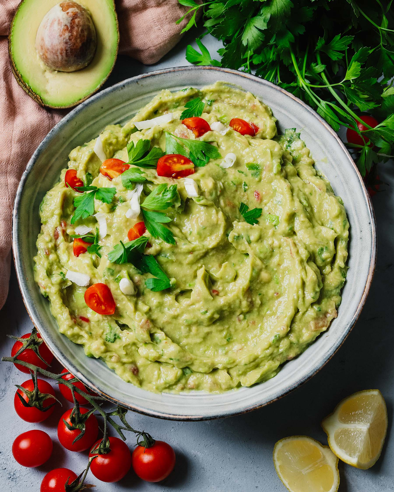

INGREDIENTES
6 aguacates medianos o 4 grandes maduros (aconsejo los medianos por su sabor)
100 g. de tomate (2 tomates pequeños)
100 g. de cebolla (1 cebolla mediana aproximadamente)
1 lima entera
1 cucharada de hojas de cilantro fresco (sin tallo)
Sal (al gusto de casa)
Para acompañar: Totopos o triángulos de maíz (nachos o frituritas)
Opcional (si te gusta el picante, es fundamental): 1 chile serrano (si no lo encuentras puedes utilizar jalapeños en conserva, guindilla o cayena)
PREPARACION
Pelamos la cebolla y lavamos el tomate. Los picamos muy finos, lo más posible, que se vean pero que se note lo justo.
Elegimos unos aguacates maduros que no estén demasiados duros para aplastarlos, además el sabor del aguacate maduro es mucho mejor. Debe estar maduro pero no blando, la piel debe estar firme y al apretar con el dedo se hundirá ligeramente.
Cortamos los aguacates por la mitad hasta el hueso y giramos cada parte separando las dos mitades. Nos ayudamos de una cuchara de plástico para vaciar las dos partes y dejamos el hueso en la misma fuente donde vamos a poner el aguacate.